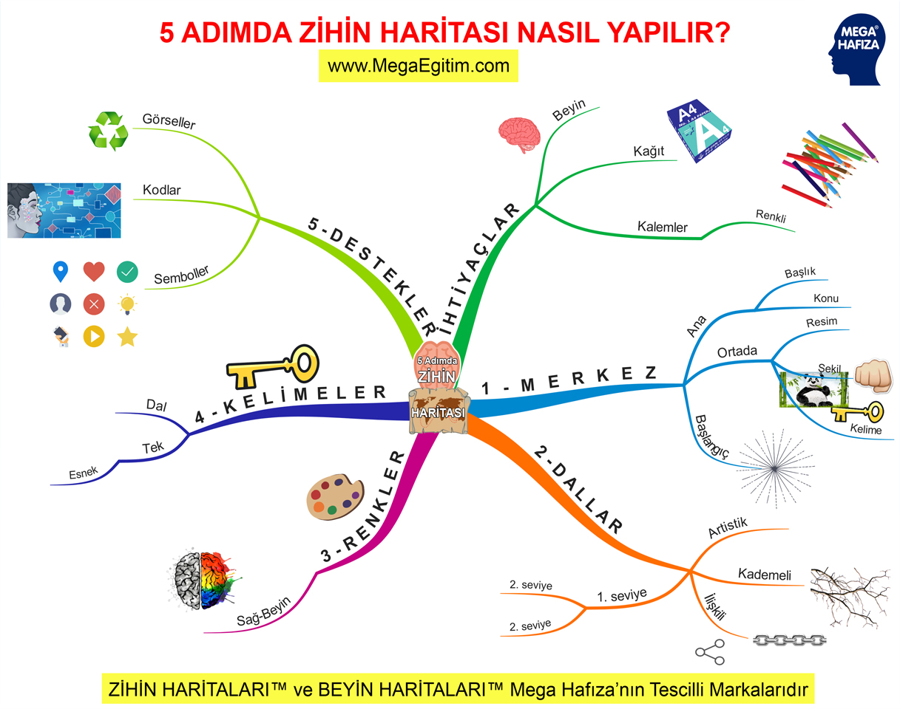

5 Adımda Zihin Haritası Nasıl Hazırlanır?

Not tutuyorsunuz ama unutuyorsunuz. Yeni bir fikir üretmek istiyorsunuz ama nereden başlayacağınızı bilemiyorsunuz. Öğrendiğinizi düşündüğünüz bilgileri gerektiğinde hatırlamakta zorlanıyorsunuz. Bir rapor, makale veya kitap yazmak istiyorsunuz ama planlama yapamıyorsunuz. Birçok fikirden hangisini seçeceğinize karar vermede zorlanıyorsunuz. Bunların hepsindeki ortak problem beyninizdeki bilgilerin bir düzen içinde olmaması ve karmaşa yaratması. Bilgilerin gerek beyninize yerleştirilirken, gerek beyninizden ilişkisel olarak ideal bir düzende dışarı çıkartılması için beyin haritaları veya diğer adıyla zihin haritaları beynin doğal yapısına en uygun tekniklerden biridir. Bu makalede “5 Adımda Zihin Haritası Nasıl Hazırlanır?” konusunu önemli ipuçları verilmektedir.
Zihin haritası, beyin kapasitesini maksimum seviyede kullanmak, potansiyelinizi açığa çıkarmak için kullanabileceğiniz güçlü, ilişkisel ve grafiksel bir tekniktir. İlişkisel harita anahtar kelime, şekil, resim, sayı, mantık, renk, grafik ve üç boyut gibi özellikleri kullanarak beynini her iki yarım küresini de birlikte ve dengeli kullanmanızı sağlamaktadır.
Zihin Haritası için Nelere İhtiyaç Var?
Zihin haritası veya diğer adıyla beyin haritası tekniğini kullanmak için ihtiyacınız olan şey öncelikle beyniniz, beynin ilişkisel düşünmesi ve hayal gücünüzdür. İhtiyacınız olan diğer şey ise renkli boya kalemleri ve boş çizgisiz bir A4 sayfadır.
Zihin Haritası 5 ADIMDA NASIL HAZIRLANIR?
Boş sayfanızı yatay olarak tutun. Bunun sebebi aktif görme alanınızın yatay olarak daha geniş olmasıdır. Amaç büyük resmi tek bakışta görebilmektir. Ana başlığı sayfanın ortasına bir şekil veya resim olarak koyun. Destekleyici bir anahtar kelime de kullanılabilir. Zihin haritasının merkezden başlamasını nedeni her yönde dallanma özgürlüğü vermesidir.
Ana konuya bağlanacak ikinci derecedeki başlıkları merkezden, üçüncü derecedeki bilgileri kendisiyle ilgili ikinci derecedeki kolların ucundan ve dördüncü derecedeki bilgileri kendisiyle ilgili üçüncü derecedeki kolların ucundan kollar şeklinde dallandırarak ekleyin. Çünkü beyin hücreleri de bu şekilde ilişkisel olarak beyin hücreleri arasında bağlar kurarlar. Kolları düz çizgi yerine kavisli yapmak işe hem artistik bir görüntü katar, hem de sayfanın daha ekonomik kullanılmasını sağlar.
Zihin haritasında mutlaka renkler kullanın. Çünkü renkler beyninizin sağ yarım küresini de işin içine katmada çok etkilidir.
Her dallanma üzerine sadece bir tane anahtar kelime yazın. Çünkü tek anahtar kelime kendisinden dağılacak diğer bilgilerin eklenmesine daha fazla esneklik katar.
Dallanmaların üzerinde ve çevrede de ilgili destekleyici görseller kullanın. Resimle bilginin hafızada kalması için çok etkilidir. Şu Çin atasözünü unutmayın! “Bir resim bin sözcüğe bedeldir“.